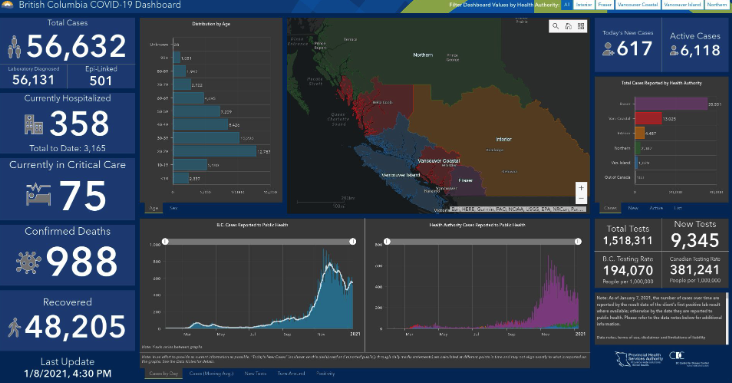
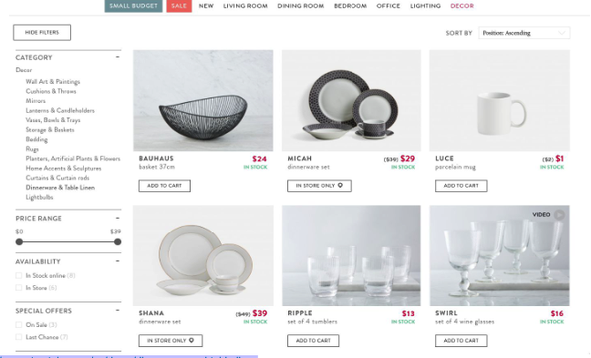
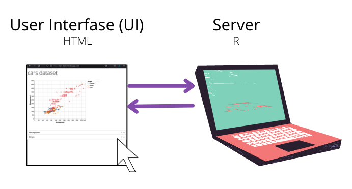
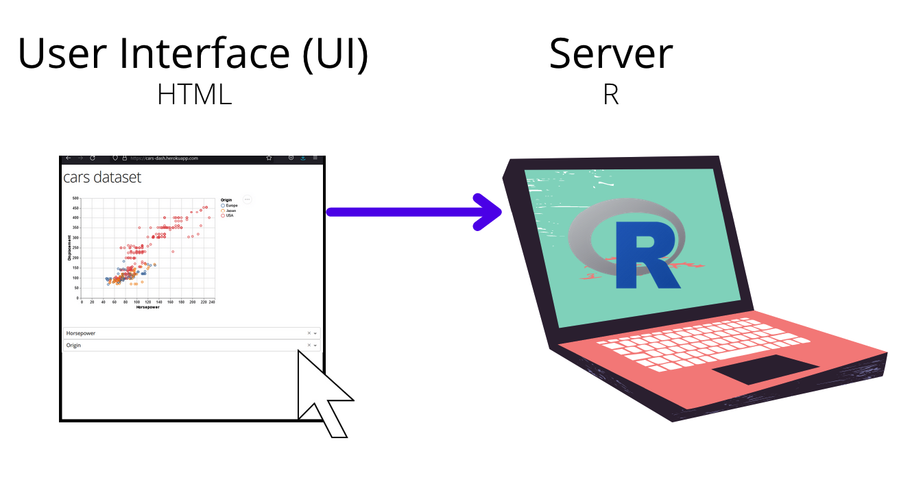
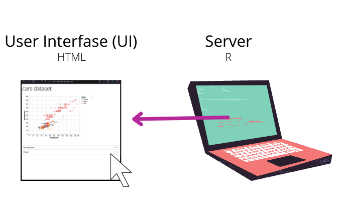
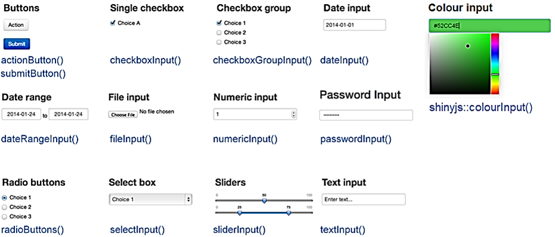

Main components of a Shiny App:
- User interface (frontend)
- Server (backend)
shinyApp()
Data Visualization II - DSCI 532 - MDS 2022/23
What is a data dashboard?
What is a Shiny App and how can we build one?
What is reactive programming?
This class is based in the book Mastering Shiny:
📚 Chapter 1 - Your first Shiny app
📚 Chapter 3, section 2: Basic reactivity - The server function
This information is also available in the L1 Lecture notes


“An information management tool that visually tracks, analyzes, and displays key performance indicators, metrics, as well as key data points, allowing you to monitor the current state of your business, department, team, or specific process”
… make results easier to understand to non-technical people can more easily read and interpret it.
… uses interactive elements to help exploring and understand certain points, explore areas of interest, and help taking data-driven decisions.
Extracted from: Business Dashboards
Extracted from: Business Dashboards
Both are open source packages
New! Shiny for python
Mature web app framework Special packages for testing the app (Shinytest2)
Extensive documentation (books 📚)
It has a learning curve but allows more customization than other technologies (i.e. Tableau)
New! 🐍✨ Shiny for python (It is not ready for production apps)
Comparison among technologies: blogposts
Main project Create a Shiny app
Vocabulary Warm-up activity!
Individual Assignment: Dash Python app
A Shiny app is a web page (UI) connected to a computer running a live R session (Server)
shinyApp()app.R 📄1. User interface (frontend) Nested R functions that assemble an HTML user interface for your app
2. Server (backend) a function with instructions on how to build and rebuild the R objects displayed in the UI
3. shinyApp() combines ui and server into a functioning app.
In computer science, interactive refers to software which accepts and responds to input from people, for example, data or commands.
Source: Wikipedia
No necessarily…
For example, an Altair plot
It is not required that we code a connection to a server, this kind of interactivity is provided by the plotting library
It is not always needed a widget (for example, a slider)
We need to add widgets to allow the user interact with the app and send a message to the server
We have to 🔌 connect the user interface to the server.
For that, we need to use a specialized dashboard library (for example, Shiny or Dash)
“users change input controls (dragging sliders, typing in textboxes, checking checkboxes, …) which causes logic to run on the server (reading CSVs, subsetting data, fitting models, …)”
Source: Mastering Shiny
…“ultimately resulting in outputs updating (plots redrawing, tables updating, …).”
Source: Mastering Shiny
*Input()render*()*Output()Collects values from the user
 :::footer Active Widgets :::
render*() and *Output() functions work together to add R output to the UI
You can check the Shiny cheat-sheet
shinyapps.ioWe are going to learn other deployment methods in lecture 7
Define what is a data dashboard.
Identify the server and the user interface as dashboard core elements.
Implement reactive programming in a Shiny app.
Create and deploy a basic Shiny R app.